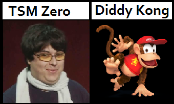
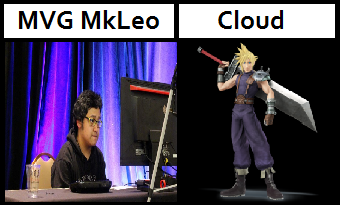
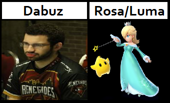
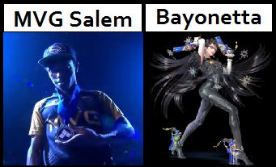
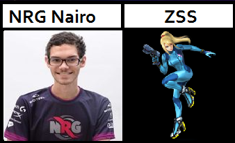
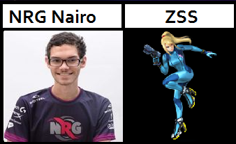
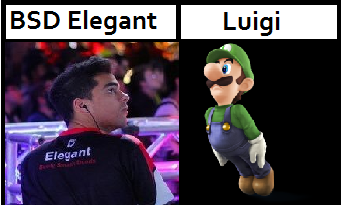
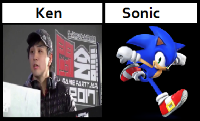

The Players




 



TSM Zero
ZeRo is a smasher from Chillán, Chile who currently resides in Indiana.
He was the undisputed best Smash 4 player in the world throughout 2014 and 2015. With a combination of Diddy Kong and Sheik, he had a record of 56 consecutive tournament wins from the game's release on Wii U in November 2014 until MLG World Finals 2015 in October 2015, including nationals such as Apex 2015, CEO 2015, EVO 2015, Super Smash Con 2015, and The Big House 5. After winning 2GGT: EE Saga, ZeRo went on a 4-month hiatus and made his comeback in the summer of 2016, almost exclusively playing Diddy Kong, mainly due to the Sheik nerfs in 1.1.5. In March 2017, he also picked up Lucina as one of his main characters. While not as dominant as before, he still achieves great tournament results such as 1st at Frostbite 2017, 2GGC: Nairo Saga, CEO 2017, 2GGC: SCR Saga, and Shine 2017, and is still considered the best in the game. ZeRo is currently ranked at the 0 position on the Chicago Smash 4 Power Rankings and 1st on the Panda Global Rankings v3. He was formerly ranked at the 0 position on the SoCal Smash 4 Power Rankings, and was formerly ranked 1st on the New Jersey Smash 4 Power Rankings. He is considered the best Diddy Kong player in the world.
×
MVG MkLeo
MkLeo, also known simply as Leo, is a Smash 4 top professional smasher from Mexico who mains Cloud, Marth, and Meta Knight, with Corrin as a secondary. He is his country's best player and currently considered to be the second best player in the world behind ZeRo. He is also widely considered to be the best Marth player in the world and is considered to be one of the best Cloud players in the world (along with Tweek). He is cousins with professional smashers Serge and Javi.
Leo arguably popularized both Meta Knight and Marth, characters that had been seen as mediocre after their nerfs from Brawl, as top players such as Abadango have since used Meta Knight against other top players until his nerfs in game updates, as well as lower-leveled players picking up Marth due to his dominance with him.
He is so far the youngest player to win a major Smash 4 tournament, doing so at only 15 years old, achieving this feat at 2GGT: ZeRo Saga. Due to his aggressive style and heavy punish game with Meta Knight and proving his skills surpass those of top players at a very young age, some compare him to Nairo's early Brawl career.
×
Dabuz
Dabuz is an SSB4 Rosalina and Luma main with a strong Olimar secondary from Nesconset, New York, and is considered the best Rosalina player in the world, and one of the best Olimar players in the world, alongside Shuton and Myran. Dabuz is currently ranked 1st on the New York Smash 4 Power Rankings and 4th on the Panda Global Rankings v3.
In SSBB, Dabuz was an Olimar player, and was considered the best Olimar player in the United States. Dabuz was formerly ranked 20th on the 2014 SSBBRank, and 6th on the Tristate Brawl Power Rankings. A noted threat offline, despite sparse tournament attendance, he gained fame as a prominent online player, winning many online tournaments, All is Brawl playoffs, and GameBattles playoffs.
He is the 10th player to take a set off of ZeRo, doing so at WTFox 2.
×
MVG Salem
Salem is an SSB4 Bayonetta player with strong Greninja and Samus secondaries from Atlantic City, New Jersey, who is currently residing in Orlando, Florida, and is widely considered the best Bayonetta player in the world. Salem is currently ranked 2nd on the Central Florida Smash 4 Power Rankings and 11th on the Panda Global Rankings v3, and was formerly ranked 3rd on the New Jersey Power Rankings. He has taken sets off of top players such as ZeRo, Nairo, MkLeo, Tweek, Dabuz, KEN, Larry Lurr, VoiD, Mr.R, and Abadango. Salem is considered to be one of the best Smash 4 players in the world.
His static partner in doubles is Ryuga and they are considered to be one of the best doubles teams in the world. The two have achieved strong results together, such as 3rd at UGC Smash Open, 4th at Super Smash Con 2017, and 2nd at both Frostbite 2017 and DreamHack Atlanta 2017. They have taken sets off of teams such as ZeRo and Nairo, VoiD and NAKAT, ESAM and MVD, and Abadango and Kameme.
×
CLG Void
VoiD is an SSB4 Sheik player from Kapolei, Hawaii, who is currently residing in Los Angeles, California, and is considered one of the best Sheik players in the world, along with Mr.R. He is a major pioneer and influence on the Sheik metagame, notable for his usage of innovative combos, extensions, and kill set-ups. VoiD is currently ranked 2nd on the SoCal Smash 4 Power Rankings, 13th on the Panda Global Rankings v3, and was formerly ranked 1st on the Hawaii Smash 4 Power Rankings.
He regularly teams with NAKAT in Doubles, and the pair are considered one of the best Doubles teams in the world.
On January 5th, 2016, VoiD was signed by 2GGaming.[1] On June 16th, VoiD was signed by Counter Logic Gaming
×
NRG Nairo
Nairo is an American professional smasher who mains Meta Knight in Brawl and Zero Suit Samus in Smash 4, and is the younger brother of Ksizzle. He is known for being among the youngest, yet one of the most successful smashers to compete in tournaments, as well as being the best Brawl Meta Knight, the best Smash 4 Zero Suit Samus, and the best Smash 4 Bowser player in the world. Nairo is also known for his highly aggressive Meta Knight style, which is at least partly responsible for his great proficiency against Olimar players. He frequently teamed with ADHD in doubles, where Nairo used his aggressive style to overwhelm opponents while ADHD created stage control with Diddy Kong's Banana Peels. The team was considered to be the most powerful doubles force in Brawl, having won Apex 2013, SKTAR 2, Apex 2014, SKTAR 3, and Super Smash Con 2016.
×
BSD Elegant
Elegant is an SSB4 Luigi player from Irvine, California, and is considered the best Luigi player in the world. Elegant is currently ranked 3rd on the SoCal Smash 4 Power Rankings, ranked at the 0 spot on the NorCal Smash 4 Power Rankings, and 25th on the Panda Global Rankings v3. He has taken sets off of top players such as Salem, Nairo, MkLeo, Larry Lurr, VoiD, Mr.R, komorikiri, ESAM, Abadango, and Ally.
He regularly teams with Aarvark in Doubles, and the pair are considered one of the best Doubles teams in the world.
On March 22nd, 2017, both Elegant and Aarvark were signed by Beefy Smash Doods
×
Ken
KEN (ケン) is an SSB4 Sonic player from Tokyo, Japan, and is considered the best Sonic player in the world. KEN is currently ranked 1st on the JAPAN Power Rankings and 16th on the Panda Global Rankings v3. He has taken sets off of top players such as Nairo, MkLeo, Tweek, Dabuz, Larry Lurr, VoiD, Mr.R, Abadango, Mistake, and komorikiri.
×